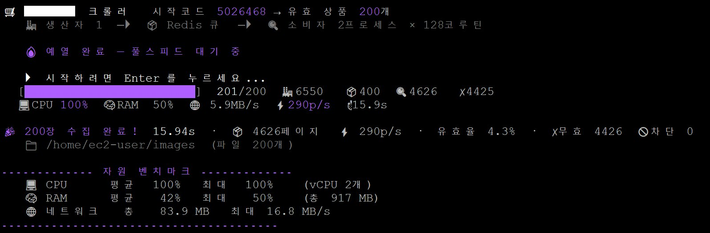
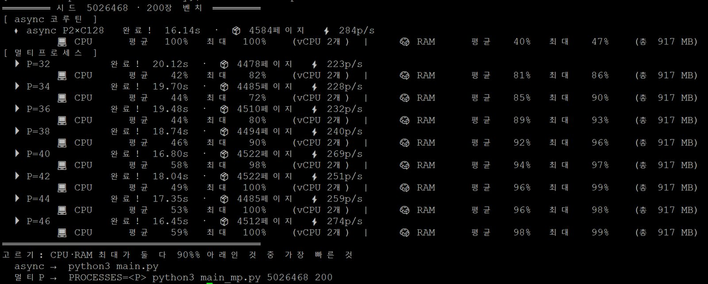

작업 03 / 10인프라 · 성능 측정2026
high-throughput-image-pipeline
t3.micro 한 대에서의 이미지 수집 처리량 최적화,
CPU 병목 측정과 코루틴 구성

01개요
vCPU 2개, 메모리 1GB 서버에서 수집 속도 비교
처음에는 네트워크가 병목일 거라고 예상했습니다. 요청 하나의 지연을 재고 동시성을 올려 보니 차단은 한 번도 없었고 CPU가 먼저 100%에 닿았습니다. 프로세스를 늘리는 대신 코루틴으로 동시성을 높였고, CPU는 100%까지 쓰면서 메모리는 최대 47%였습니다.
16.14초
200장을 모으기까지
t3.micro 한 대에서 GO 신호부터 잰 시간입니다.
284페이지/초
처리 속도
이미지가 없는 페이지까지 모두 합친 속도입니다.
100%
CPU 최대 사용
vCPU 2개 기준입니다.
47%
메모리 최대 사용
1GB의 절반을 넘지 않았습니다.
02과제와 조건
상품 코드를 하나씩 늘려 가며, 유효한 상품의 대표 이미지를 모았습니다
시작 상품 코드에서 1씩 늘려 가며 상세 페이지를 확인하고, 유효한 상품 N개의 대표 이미지를 내려받습니다. 기본값은 200개입니다. 유효한 상품이 드문드문 있어서, 측정에 쓴 시작 코드에서는 200장을 모으려고 4천 페이지 넘게 확인해야 했습니다.
- 필수 구조생산자와 소비자를 나누고, 둘은 Redis 메시지 큐로만 주고받습니다.
- 동시성 규칙멀티스레드는 쓸 수 없습니다. 동시성은 멀티프로세스로 내되, asyncio 코루틴은 쓸 수 있습니다.
- 유효한 상품대상 사이트는 없는 코드에도 HTTP 200을 돌려줍니다. 그래서 응답 본문에 이미지 필드가 있을 때만 유효한 상품으로 봤습니다.
- 평가 기준제한된 t3.micro 한 대에서 얼마나 빨리 다 받느냐입니다.
03파이프라인 구조
생산자 1개, Redis 큐, 소비자 2프로세스 × 코루틴 128개
CPU가 2개라 소비자 프로세스를 2개 띄우고, 프로세스마다 자기 이벤트 루프에서 코루틴 128개를 돌렸습니다. 동시에 나가는 요청은 모두 256개입니다.
- INCR로 N장만 저장저장하기 전에 Redis
INCR로 자리를 원자적으로 예약합니다. 여러 소비자가 동시에 받아도 정해진 개수를 넘지 않습니다. - 종료 판정은 디스크 파일 수로카운터가 아니라 디스크에 실제로 쌓인 파일 수로 종료를 정해, 199장과 200장 사이에서 엇갈리는 일을 막았습니다.
- HTTP/2 연결 공유코루틴 수백 개의 요청을 keep-alive 연결 몇 개에 실어 TLS 핸드셰이크 횟수를 줄였습니다. t3.micro에서 재 보니 HTTP/2가 더 빨랐습니다.
- 준비 시간은 측정에서 제외프로세스를 띄우고, 연결 풀을 만들고, robots.txt로 DNS·TCP·TLS를 데우는 일을 모두 마친 뒤 GO 신호부터 시간을 쟀습니다.
04병목 측정
요청 지연 측정과 CPU 병목 확인
병목이 네트워크인지 CPU인지 확인하려고 요청 하나의 지연을 재고, 동시성을 올리면서 처리 속도가 더 늘지 않는 지점을 찾았습니다.

- 요청 하나에 약 85ms코루틴 하나로는 1초에 12페이지쯤 처리하는 셈입니다.
- 동시성에 비례해 증가처리 속도는 동시성을 지연으로 나눈 만큼, 거의 그대로 늘어납니다.
- 초당 약 320페이지에서 포화TLS와 파싱, 이미지 처리가 CPU 2개를 채우면서 막힙니다. 계산으로는 프로세스 32개면 초당 376페이지지만, 그 전에 CPU가 100%에 닿습니다.
메모리: 스왑이 나지 않는 범위
메모리가 넘쳐 스왑으로 넘어가면 처리 속도가 크게 떨어지고, 같은 시험을 해도 결과가 매번 달라집니다.
CPU: 최대한 사용
병목이 CPU라서, 메모리가 넘치지 않는 범위에서 CPU 2개를 가장 많이 쓰는 구성을 찾았습니다.
05코루틴과 프로세스
코루틴 방식과 프로세스 방식 비교
코루틴 없이 프로세스만 쓰는 버전도 따로 만들어, 같은 시작 코드로 200장씩 모아 비교했습니다. 프로세스 방식은 CPU를 채우려면 프로세스를 늘려야 하는데, 그럴수록 메모리가 빠르게 찼습니다.
| 방식 | 200장 | 메모리 최대 | CPU 최대 | 처리 속도 |
|---|---|---|---|---|
| 코루틴 2 × 128 | 16.14초 | 47% | 100% | 284/초 |
| 프로세스 32개 | 20.12초 | 86% | 82% | 223/초 |
| 프로세스 40개 | 16.80초 | 97% | 98% | 269/초 |
| 프로세스 46개 | 16.45초 | 99% | 100% | 274/초 |
프로세스 46개
99%
CPU를 다 쓰려고 46개까지 늘리자 메모리가 거의 다 찼습니다.
코루틴 2 × 128
47%
16.14초로 가장 빨랐고, 메모리는 47%까지만 썼습니다.
프로세스 방식에서 CPU와 메모리가 둘 다 90% 아래에 머문 건 32개뿐이었는데, 20.12초로 표에서 가장 느렸습니다. 그래서 코루틴 방식을 택했습니다.

06결과
구현 선택과 측정 조건
코루틴 2 × 128 구성이 세 명의 구현 중 가장 빨라 팀 제출본으로 채택됐습니다.
- 계산값과 실측값의 차이계산으로 나온 처리 속도와 실제로 잰 값은 꽤 달랐습니다. 무엇을 쓸지는 잰 값을 보고 정했습니다.
- 측정 조건모든 방식을 같은 시작 코드로 200장씩 모았고, 프로세스 기동과 연결 준비 시간은 타이머에서 뺐습니다.